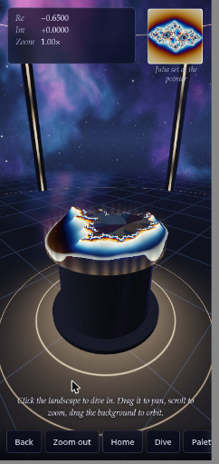
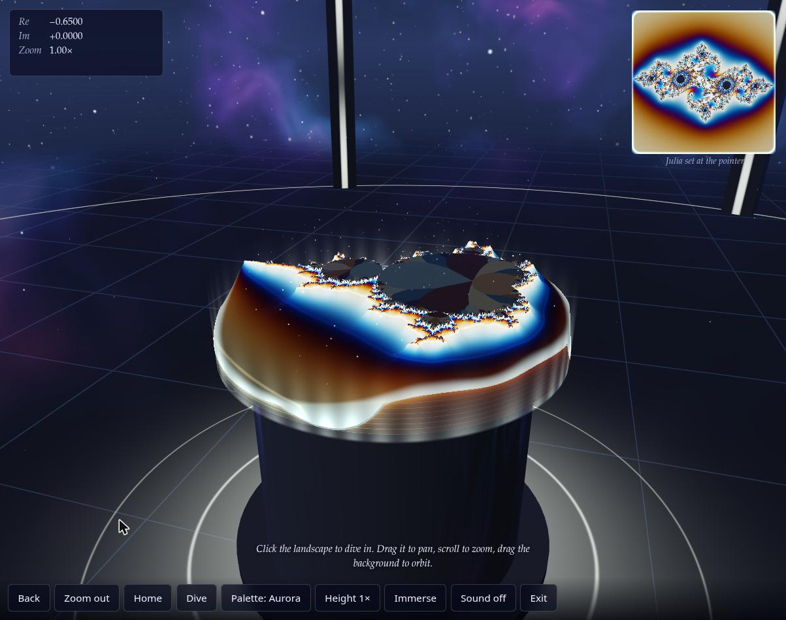

ACandidate A:
Opus 5.5 · v1
Anthropic · Claude.ai (Web)
- Standing
- 1 (tie)
- Mean rank
- 1.8
ACandidate A:
Anthropic · Claude.ai (Web)
BCandidate B:
GitHub · Copilot Tasks (cloud session)
Play Copilot Autopilot · v1 Details on Copilot Autopilot · v1
Mean rank derived is the arithmetic mean of the ranks a candidate received (1 = best). Standing = 1 + the number of candidates with a strictly lower mean rank, among those ranked by every judge (a competition rank: ties share a place, e.g. 1, 1, 3). Caveats.
5 of 5 judges ranked both. A ranked higher with 5, B with 0.
| Judge | AOpus 5.5 · v1 | BCopilot Autopilot · v1 | Difference A − B | Ranked higher |
|---|---|---|---|---|
| HTML static | 1 / 8 | 7 / 8 | −6 | A by 6 places |
| Transcript static | 2 / 8 | 6 / 8 | −4 | A by 4 places |
| HTML + Transcript static | 1 / 8 | 7 / 8 | −6 | A by 6 places |
| Browser browser | 4 / 8 | 7 / 8 | −3 | A by 3 places |
| Browser + HTML browser | 1 / 8 | 7 / 8 | −6 | A by 6 places |
| Mean rank derived | 1.8 | 6.8 | −5.0 | A by 5 places |
| Spread derived | 1–4 · σ 1.17 | 6–7 · σ 0.40 |
Rank given by each blind judge (1 = best, out of the number of candidates it ranked). Difference =
A's rank minus B's; a negative difference means A was ranked higher. Mean rank derived = arithmetic mean of a
candidate's judge ranks; spread derived = lowest–highest rank and the population standard deviation σ. Ranks are
quoted from each judge's RANKING.md, linked under Justifications.
Each phase-1 reviewer scored one candidate at a time, blind, on 6 1–10 criteria of its own review type, plus an overall score. Higher is better. Scores link to the full review.
| Review | AOpus 5.5 · v1 | BCopilot Autopilot · v1 | Difference A − B | Scored higher |
|---|---|---|---|---|
| HTML | 8.5 | 2 | +6.5 | A by 6.5 |
| Transcript | 7 | 4 | +3 | A by 3 |
| Browser | 8 | 4 | +4 | A by 4 |
| Criterion | AOpus 5.5 · v1 | BCopilot Autopilot · v1 | Difference A − B |
|---|---|---|---|
| Done-when fulfilment | 8 | 2 | +6 |
| Device/XR compatibility | 8 | 3 | +5 |
| Visual wow effect | 9 | 3 | +6 |
| Usability & controls | 8 | 3 | +5 |
| Code quality & robustness | 7 | 3 | +4 |
| Prompt adherence | 9 | 6 | +3 |
A Opus 5.5 · v1
HTML review (blind id
- Done-when fulfilment 8 — Immersive VR and AR sessions place a 3D Mandelbrot heightfield "hologram" on a pedestal in a sky-domed arena; iPhones get a gyro and Cardboard fallback. It is an open arena, not an enclosed room.
- Device/XR compatibility 8 — No required features,
local-floor→localfallback, optional hand-tracking, transient-pointer, screen-space AR with hit-test and dom-overlay, xr-standard gamepads, WebGL2 float-format fallbacks.- Visual wow effect 9 — GPU perturbation deep zoom (~43 octaves), distance-estimate terrain, procedural nebula cubemap with env reflections and fresnel, ACES tonemap, palette cycling, glows, particles, build/scan animations, Julia inset.
- Usability & controls 8 — Clear landing page, per-input-type help, a world-space panel that follows the head, grab-pan, two-hand zoom and rotate, tap-to-dive, history, guided "Dive" tour, haptics, audio. No comfort vignette.
- Code quality & robustness 7 — Strong engineering (async PBO readback, adaptive GPU budget, scissored progressive rendering), but dense one-liner style, a leaked XR session on the error path, synchronous CPU probes and leftover debug hooks.
- Prompt adherence 9 — Truly standalone: one file with zero external requests (raw WebGL2 + WebXR, no three.js) and an XR-first design.
candidate-02), criteria table, verbatim — REVIEW.md lines 5–10 GitHub
B Copilot Autopilot · v1
HTML review (blind id
- Done-when fulfilment 2 — The XR render loop throws after its first frame (
frameparameter shadows the function, l.163/167), so no device gets a working immersive room. Only the non-XR orbit view works.- Device/XR compatibility 3 — It asks for
immersive-vr/immersive-arwithxrCompatible, butlocal-flooris required with no fallback, there is no XR input at all, AR is cleared opaque, and iPhone gets only the flat fallback.- Visual wow effect 3 — A 120×120 CPU heightfield in three hard colour bands, simple diffuse/rim shading, 650 point "stars" and a flat floor plane. The viewer spawns under a plateau 1.85 m high.
- Usability & controls 3 — The landing panel is good-looking, but XR has no controls, no exit button and no locomotion. The hint promises pinch-zoom that isn't implemented, and Explore mode has no way back to the menu.
- Code quality & robustness 3 — Compact raw WebGL2 with shader error checks. But it has a fatal shadowing bug, a per-view full-framebuffer clear, no try/catch in
enter(), canvas resize on every frame, and a stale XR framebuffer binding.- Prompt adherence 6 — A true single file with no dependencies that uses WebXR, but it falls far short of "highest possible wow" and the "virtual room".
candidate-04), criteria table, verbatim — REVIEW.md lines 5–10 GitHub
| Criterion | AOpus 5.5 · v1 | BCopilot Autopilot · v1 | Difference A − B |
|---|---|---|---|
| Requirement understanding | 8 | 5 | +3 |
| Engineering process | 7 | 5 | +2 |
| Verification rigor | 7 | 4 | +3 |
| Honesty & calibration | 7 | 4 | +3 |
| Communication & handoff | 7 | 4 | +3 |
| Expected deliverable quality | 7 | 4 | +3 |
A Opus 5.5 · v1
Transcript review (blind id
- Requirement understanding 8 — Researched each device class (iOS has no WebXR, so it gets a gyro and Cardboard fallback; Steam Frame flagged as unofficial; HTTPS needed). "AR glasses" only partly addressed.
- Engineering process 7 — Strong prototyping and error recovery, but the first turn used its whole tool budget without writing any HTML, and two "Continue" turns were needed.
- Verification rigor 7 — Unusually deep for this task (fp32-vs-float64 prototype, emulated Quest 3 with scripted controller, trigger, stick and panel). Deep zoom, AR, phone paths and the final build's visuals were not checked.
- Honesty & calibration 7 — Clear "Not checked" and "Limits" sections, but a few claims go beyond the evidence (deep zoom "works", fp32 "matched" float64, "no console errors" for the in-browser mode).
- Communication & handoff 7 — Final handoff is excellent (hosting commands, per-device controls table, checked/not-checked lists), but three assistant turns and two stops with no file delivered.
- Expected deliverable quality 7 — Ambitious single 112 KB, dependency-free WebGL2/WebXR file with perturbation deep zoom, a room scene, a guided dive tour, a Julia inset and an emulator-verified XR input path. Phone paths and mobile-GPU performance are untested.
candidate-02), criteria table, verbatim — REVIEW.md lines 5–10 GitHub
B Copilot Autopilot · v1
Transcript review (blind id
- Requirement understanding 5 — Saw the need for VR + AR entry points and a phone fallback, but never brought up WebXR's HTTPS/secure-context rule, iOS Safari's missing WebXR support, or how "highest wow" fits in 195 lines.
- Engineering process 5 — A short plan, then build, syntax check, screenshot, and a bug fixed from the screenshot. There was no research and no device or XR-specific work.
- Verification rigor 4 — A real visual smoke test caught a real camera bug. Nothing exercised an immersive session, controllers, or a mobile viewport.
- Honesty & calibration 4 — "✅ Task complete" and "Created and verified" overstate what was checked. The transcript shows no evidence for "without console errors", and it states no limitations.
- Communication & handoff 4 — The work needed one user turn and the artifact was attached. There are no instructions for opening the file on a headset or phone, no hosting or HTTPS guidance, and no list of controls.
- Expected deliverable quality 4 — +195 lines covering raw WebGL, XR, AR, and a fallback is thin for "highest possible wow". The only render shown is "magenta fractal columns over a blue floor under a starfield".
candidate-04), criteria table, verbatim — REVIEW.md lines 5–10 GitHub
| Criterion | AOpus 5.5 · v1 | BCopilot Autopilot · v1 | Difference A − B |
|---|---|---|---|
| Loads & renders | 9 | 7 | +2 |
| Done-when (desktop-checkable) | 8 | 4 | +4 |
| Visual wow / Visual wow effect | 8 | 3 | +5 |
| Usability & controls | 7 | 5 | +2 |
| Robustness | 8 | 6 | +2 |
| XR readiness & messaging | 7 | 4 | +3 |
A Opus 5.5 · v1
Browser review (blind id
- Loads & renders 9 — Single inline script, FCP ≈ 68 ms on reload, a 3D scene is live behind the landing card at once, no console messages at all.
- Done-when (desktop-checkable) 8 — A real room (starfield and nebula sky, grid floor, pillars, glowing rings) with a raised 3D Mandelbrot height field on a pedestal. A clear XR path exists in code (Enter VR/AR buttons), but they are hidden here, so I couldn't exercise that path.
- Visual wow 8 — The holographic tabletop, palettes and live Julia inset are striking, and deep zoom (≈1e6×) holds detail. Spiky "grass" aliasing at the boundary, faceted interiors and terraced slabs in Immerse take some of the polish off.
- Usability & controls 7 — Clear hint line, readable Re/Im/Zoom HUD, named locations ("Seahorse Valley"), and every button works. No keyboard navigation, Home doesn't reset the camera orbit, and the phone toolbar hides half its buttons behind a horizontal scroll with no affordance.
- Robustness 8 — Zero console errors or warnings. Resizes cleanly with no page scroll. 60 fps across every mode on re-test, though one early session ran at ~2 fps that I couldn't reproduce.
- XR readiness & messaging 7 — Feature-detects with
isSessionSupportedand hides VR/AR when they're unsupported. A plain-language note offers the browser fallback, and phone-only "Look around" and "Cardboard" modes exist in the DOM. The note says "no WebXR" even thoughnavigator.xrexists (it's really "no XR device").candidate-02), criteria table, verbatim — REVIEW.md lines 5–10 GitHub
B Copilot Autopilot · v1
Browser review (blind id
- Loads & renders 7 — Clean load with zero console messages and a WebGL2 canvas; the start card shows in under a second, and the 3D scene appears only after "Explore on screen".
- Done-when (desktop-checkable) 4 — A 3D Mandelbrot heightfield sits on a floor under a starfield, but there is no "room", and on this desktop the XR path is a silent dead end.
- Visual wow effect 3 — A low-res magenta extruded plateau with jagged, stretched wall faces. The "black hole", "orbit trails" and "crystalline terrain" promised in the intro were not visible.
- Usability & controls 5 — Drag-orbit, wheel zoom and double-click reset all work, with a hint line. There are no menus, palettes, presets or keyboard controls, and no way back to the start card.
- Robustness 6 — 60 fps, no errors, the canvas tracks resizes, and there is no horizontal scroll at 446 px. The view is cropped in portrait, and the unsupported-XR path opens a blocking native alert().
- XR readiness & messaging 4 — "Enter VR" and "Place in AR" stay enabled although
isSessionSupportedreturns false for both. Clicking one does tell the user it is unsupported ("VR is not supported on this device." / "AR is not supported on this device."), but in a blocking nativealert()rather than in-page UI, and with no hint of what to do instead.candidate-04), criteria table, verbatim — REVIEW.md lines 5–10 GitHub
Each judge ranked every candidate under its own shuffled letters, without names, and wrote a short justification per rank. Quoted verbatim from the judge's RANKING.md.
A Opus 5.5 · v1
Rank 1 of 8 · seen as letter H
Dependency-free WebGL2. Perturbation deep zoom to about 1e-13 with progressive GPU jobs, AR hit-test placement, hands, transient pointers, haptics, Cardboard stereo for iOS, Julia inset, guided tour, procedural sky. All 22 shaders validate. The most complete and correct entry.
HTML judge, justification for H, verbatim — RANKING.md line 16 GitHub
B Copilot Autopilot · v1
Rank 7 of 8 · seen as letter C
Minimal WebGL2 heightfield with stars. The XR loop stops for good if
HTML judge, justification for C, verbatim — RANKING.md line 22 GitHubgetViewerPosereturns null once. The viewer spawns inside the 1.85 m plateau. No XR interaction, usesalert(), and the advertised pinch-zoom isn't implemented.
A Opus 5.5 · v1
Rank 2 of 8 · seen as letter E
Best mathematical groundwork: fp32 perturbation checked against float64, Newton-verified tour targets, emulated Quest 3 tests with an open issue fixed in the open. Its "not checked" lists are honest. Needed three turns. AR placement and the iOS fallbacks were never exercised.
Transcript judge, justification for E, verbatim — RANKING.md line 16 GitHub
B Copilot Autopilot · v1
Rank 6 of 8 · seen as letter H
Took a screenshot, caught a camera aimed away from the fractal, and verified the fix. But the file is small, the XR paths were never exercised, and "✅ Task complete" overstates what was verified.
Transcript judge, justification for H, verbatim — RANKING.md line 20 GitHub
A Opus 5.5 · v1
Rank 1 of 8 · seen as letter B
Raw WebGL2 with perturbation deep zoom to about 4e-11, a guided dive tour, a Julia inset, AR hit-test placement, haptics, sound, and Cardboard/gyro for iPhone. The XR loop is correct, with a reference-space fallback. Tested in the IWER emulator. Its claims match the code. It needed three turns.
HTML + Transcript judge, justification for B, verbatim — RANKING.md line 15 GitHub
B Copilot Autopilot · v1
Rank 7 of 8 · seen as letter F
Minimal WebGL2 heightfield with a starfield. VR rendering is correct, but there is no XR input at all, AR clears opaque so passthrough is hidden, and the "room" is just a floor plane. The UI claims pinch-zoom and "orbit trails", and neither exists.
HTML + Transcript judge, justification for F, verbatim — RANKING.md line 21 GitHub
A Opus 5.5 · v1
Rank 4 of 8 · seen as letter A
Striking pedestal landscape with live Julia-set inset, click-to-dive, auto-dive to Seahorse Valley and progressive refinement. Clear "no WebXR" message. The "Immerse" mode gave confusing camera views, and the toolbar overflows at phone width.
Browser judge, justification for A, verbatim — RANKING.md line 18 GitHub
B Copilot Autopilot · v1
Rank 7 of 8 · seen as letter F
Clean start card with VR/AR/screen buttons, but VR/AR failures use native alert(). The screen view is a magenta extruded blob with no recognisable Mandelbrot, no controls, and the camera can pitch upside down.
Browser judge, justification for F, verbatim — RANKING.md line 21 GitHub
A Opus 5.5 · v1
Rank 1 of 8 · seen as letter G
Raw WebGL2 with perturbation zoom (float64 reference orbit, rebasing): Dive reached 2×10¹⁰ with detail intact. Smooth fly-to, Julia preview, Immerse walk-in mode, hit-test AR, Cardboard and gyro fallbacks, honest XR status. No errors. On phones the toolbar scrolls sideways.
Browser + HTML judge, justification for G, verbatim — RANKING.md line 16 GitHub
B Copilot Autopilot · v1
Rank 7 of 8 · seen as letter A
Minimal WebGL2 heightfield: a blocky pink mesa of the set with three flat colours, a floor and stars. No zoom, presets or room. It uses two native
Browser + HTML judge, justification for A, verbatim — RANKING.md line 22 GitHubalert()calls for missing XR, advertises pinch-to-zoom but doesn't implement it, and the AR clear is opaque.
Bullets from the judges' “Special elements” sections, quoted verbatim. Letters are each judge's blind labels; a bullet may also name other candidates, and may describe a strength or a problem. Every element, grouped by technique, is in the techniques catalog.
A Opus 5.5 · v1 16 bullets name A only
H, E — perturbation-theory deep zoom (float64 CPU reference orbit in an RG32F texture, float32 GPU deltas, row-scissored progressive jobs, cross-faded buffers): the only candidates that zoom past float32 limits, to roughly 1e-12 to 1e-13.
HTML judge · H = A; E = Opus 5.5 · v0 — RANKING.md line 27 GitHub
H — van Wijk & Nuij smooth zoom-pan flights plus async PBO readback with
HTML judge · H = A — RANKING.md line 28 GitHubfenceSyncfor ray-casting the hologram: no other candidate does stall-free GPU→CPU readback or optimal zoom-pan paths.
H — handheld-AR detection via
HTML judge · H = A — RANKING.md line 29 GitHubinteractionMode === 'screen-space'with hit-test reticle placement: the only phone-AR flow that places the model on a detected real surface.
H, E, G — Cardboard/split-screen phone stereo: the only route to a stereo "headset" view on iPhones, where WebXR doesn't exist.
HTML judge · H = A; E = Opus 5.5 · v0; G = GPT6 Pro · v0 — RANKING.md line 30 GitHub
E — the rendering algorithm prototyped in Python before writing shaders: an fp32 perturbation renderer was compared with float64 (mean height error 0.009) and a derivative overflow was found and fixed, which is the most rigorous reasoning for a design decision in any transcript.
Transcript judge · E = A — RANKING.md line 30 GitHub
E — tour targets verified with Newton's method and rendered contact sheets: it computed the exact period-3 nucleus and dropped c = i as "just a single filament", choosing the deep-zoom destinations by evidence rather than by folklore.
Transcript judge · E = A — RANKING.md line 31 GitHub
E — the trigger-tap open issue reported and then fixed: it reported the emulator tap failure as an open issue rather than hiding it, then fixed it and re-tested; widening the window to 4 frames is partly tuned to the emulator, though.
Transcript judge · E = A — RANKING.md line 32 GitHub
E and F — explicit "Not verified" sections: both list untested hardware, modes and features, which is the calibration standard the shorter transcripts lack.
Transcript judge · E = A; F = Opus 5.5 · v0 — RANKING.md line 33 GitHub
A, B — perturbation deep zoom: both compute a float64 reference orbit on the CPU, upload it as an RG32F texture and iterate fp32 deltas with Zhuoran rebasing on the GPU, which goes orders of magnitude deeper than every other candidate's naive float32 escape-time.
HTML + Transcript judge · A = Opus 5.5 · v0; B = A — RANKING.md line 26 GitHub
B — Julia inset at the pointer: a live Julia-set panel driven by whatever point the controller, gaze or mouse is aiming at adds real mathematical insight on top of the visual effect.
HTML + Transcript judge · B = A — RANKING.md line 29 GitHub
B — AR hit-test placement: it is the only candidate that requests
HTML + Transcript judge · B = A — RANKING.md line 30 GitHubhit-testand shows a surface reticle for placing the hologram on handheld Android AR.
A, B — multi-turn completion: both hit tool limits and needed two or three user "Continue" prompts before delivering, which counts against them as a usability cost but not against the deliverable.
HTML + Transcript judge · A = Opus 5.5 · v0; B = A — RANKING.md line 40 GitHub
A — Live Julia-set inset ("Julia set at the pointer"): it updates as you hover the Mandelbrot terrain, adding real mathematical insight on top of the visuals.
Browser judge · A = A — RANKING.md line 28 GitHub
C, G, H, A — Guided tour / destination flights to Seahorse Valley: animated flights to famous regions make deep zoom discoverable for first-time users.
Browser judge · C = Opus 5.5 · v0; G = GPT6 Pro · v0; H = GPT6 Pro · v1; A = A — RANKING.md line 31 GitHub
G, perturbation deep zoom: a float64 CPU reference orbit with Zhuoran rebasing let the Dive button run to 1.96×10¹⁰ while the terrain still rendered, far past the roughly 10⁵ limit where plain float32 shaders break down.
Browser + HTML judge · G = A — RANKING.md line 27 GitHub
G and H, local-floor/hit-test/dom-overlay session setup with Cardboard and gyro fallbacks: both pick features per mode and hide unsupported buttons, so each phone class gets a working path.
Browser + HTML judge · G = A; H = Opus 5.5 · v0 — RANKING.md line 32 GitHub
B Copilot Autopilot · v1 4 bullets name B only
H — "✅ Task complete": it declares completion when only one fallback-mode screenshot was checked and no XR path was exercised, an overclaim against a device-entry criterion.
Transcript judge · H = B — RANKING.md line 39 GitHub
F — UI and transcript overclaim: the panel text advertises "orbit trails", and the hint promises "pinch to zoom", yet the code has neither, only a wheel handler and no trails.
HTML + Transcript judge · F = B — RANKING.md line 38 GitHub
F — Native alert() for "VR/AR is not supported": it is the only candidate whose failure path used a blocking native dialog, which is poor UX and blocks the page in a headset browser.
Browser judge · F = B — RANKING.md line 32 GitHub
A, native
Browser + HTML judge · A = B — RANKING.md line 35 GitHubalert()dialogs (2): missing VR/AR is reported through blockingalert()calls, the only candidate to use native dialogs.
No bullet names both candidates.
Up to 4 screenshots per candidate, taken in desktop Chrome by the browser reviewers and browser judges (one from each source in turn).
A Opus 5.5 · v1
01-landing.jpg
A-phone.jpg
G-deepzoom-2e10.jpg
02-explore-tabletop.jpgAll 11 screenshots of Opus 5.5 · v1 on the candidate page, with their verbatim captions.
B Copilot Autopilot · v1

01-start-overlay.jpg
F-default-view.jpg
A-explore.jpg
02-explore-default-view.jpgAll 6 screenshots of Copilot Autopilot · v1 on the candidate page, with their verbatim captions.